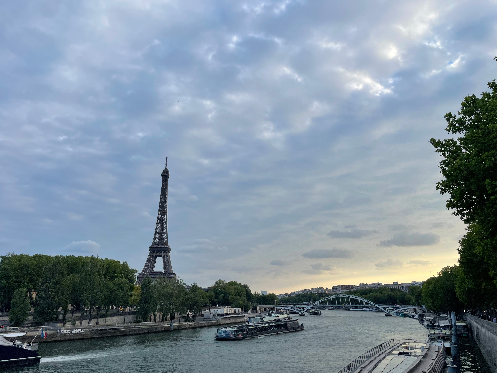

I had the opportunity to study abroad in Paris, France for three weeks during the Summer of 2023. The program allowed my classmates and I to compare the sociology of Bloomington, Indiana to that of Paris.
During the summer of 2024, I also had the chance to travel to England, Italy, and Hungary after I graduated from IU. In the future, I hope to continue exploring both the U.S and abroad.
Recently, I have fallen back in love with reading. It is my favorite hobby to take part in during my freetime, and I read around 15 books during 2023. My favorite genres include fantasy and fiction, and I always look forward to book recommendations from those who can offer them!
When I was little, my dream job was to become an astronaut. For as long as I can remember, I have loved learning about space and rockets. There are endless possibilities and challenges in space just waiting to be discovered, and the unknowns are extremely exciting to me. I love watching rocket launches, keeping up with SpaceX and NASA, and my favorite movie is even Interstellar.
When I was younger, I found that I had a little bit of a knack for music, so I started taking piano lessons when I was about 10. I then went on to play the trumpet for three years, and took extra piano classes at IU.